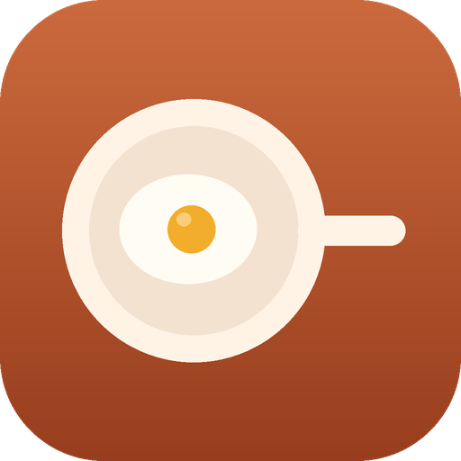
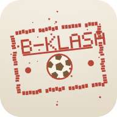
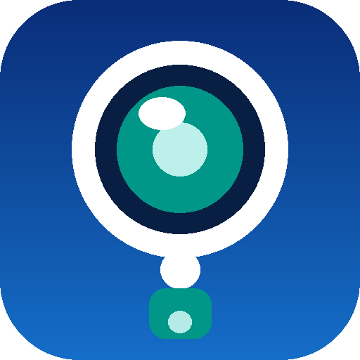
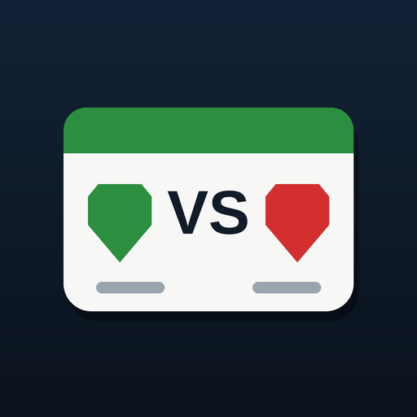
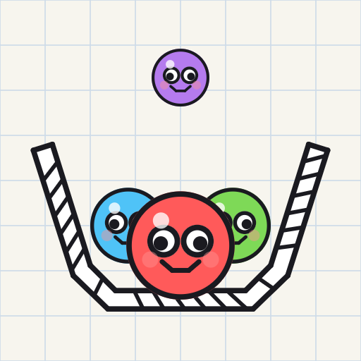

AplikacjeApps
Darmowe aplikacje na Androida — bez reklam, bez konta i bez wysyłania danych na zewnątrz. Pliki instalacyjne leżą na GitHubie, więc pobieranie nie obciąża mojego serwera. Free Android apps — no ads, no account, nothing sent off the device. Installers live on GitHub, so downloads don't load my server.

Patelnia
Przepisy z całego świata. Powiedz, ile masz czasu, a Patelnia pokaże, co zdążysz ugotować. 30 recipes from around the world. Tell it how much time you have and the pan shows what you can cook.

B-Klasa Hero
Rzuty karne i kariera w polskiej piramidzie piłkarskiej. W 100% offline. Penalty shootouts and a career in the Polish football pyramid. 100% offline.

Ascend
Pomocnik do medytacji: plan rosnących sesji, licznik z dzwonkiem, prowadzenie oddechu, myśli pisane albo dyktowane, dziennik nastroju i statystyki. Bez konta i bez reklam. A meditation helper: a growing-session plan, a timer with a bell, guided breathing, thoughts you can type or dictate, a mood journal, and stats. No account, no ads.

AN98 Scope
Kamera endoskopowa AN98 (USB UVC) na telefonie: podgląd na żywo, zdjęcia, nagrywanie MP4, zoom i obrót obrazu. Rdzeń w natywnym C++. The AN98 USB UVC endoscope on your phone: live preview, photos, MP4 recording, zoom and image rotation. Native C++ core.

Meczówka
Kartka sędziowska do wydruku 10 × 15 cm: obsada z imionami i nazwiskami, okręgami i danymi meczu. Trzy schematy rozłożenia (tabela, boisko, lista) i plik JPG gotowy na odbitkę w Rossmannie. Bez sieci i bez konta. A referee card for a 10 × 15 cm print: the crew with full names, regions and match details. Three layout schemes (table, pitch, list) and a JPG ready for a photo print. No network, no account.

Merge Cup
Dotykasz ekranu i puszczasz — kulka wpada do pudła. Dwie takie same łączą się w większą. Łącz seriami, żeby zbijać combo do x8, i nie pozwól, żeby kulka wypadła bokiem. Jedenaście poziomów, rekord na telefonie. Bez reklam i bez internetu. Touch the screen and let go — the ball drops into the box. Two of a kind join into a bigger one. Chain merges for a combo up to x8 and keep balls from falling out the side. Eleven levels, best score on the phone. No ads, no internet.
PstrykScan
Skan 3D z telefonu bez internetu: seria zdjęć i model punktowy (GLB) liczony na urządzeniu. Rdzeń SfM w natywnym C++. Phone 3D scanning with no network: a burst of photos and a point-cloud model (GLB) reconstructed on the device. Native C++ SfM core.